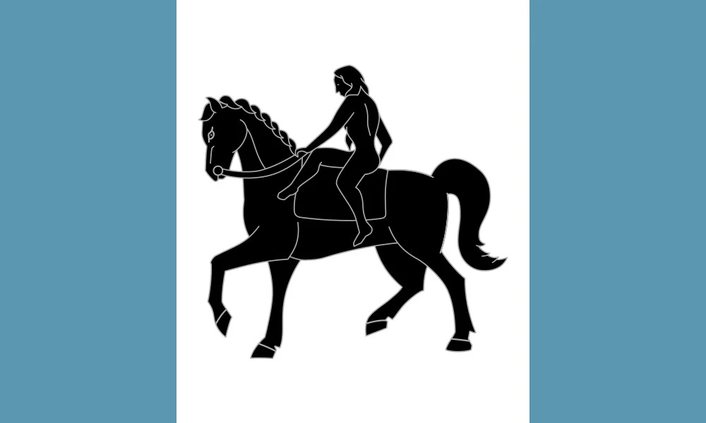

Diliana Thompson - WDD 131 - Dynamic Web Fundamentals
About Me

Hello! I'm Diliana Thompson, a passionate web developer based in Coventry, England. I love blending creativity with code to build meaningful digital experiences that solve real problems.
Coventry inspires me with its rich history and vibrant energy—from its medieval architecture to its modern innovations. I carry that spirit of resilience and creativity into everything I create.

Web Dev Resources
Here are some excellent websites to learn web development:
- freeCodeCamp – Hands-on projects and certifications
- The Odin Project – Project-based learning path
- MDN Web Docs – Trusted documentation
- Codecademy – Interactive coding lessons
- W3Schools – Beginner-friendly tutorials